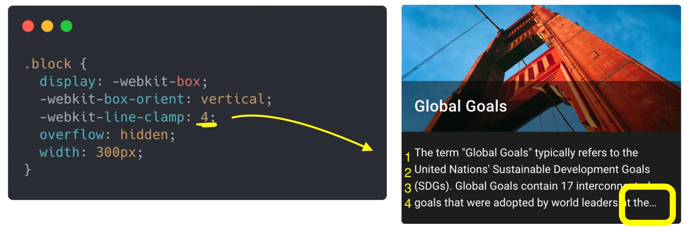
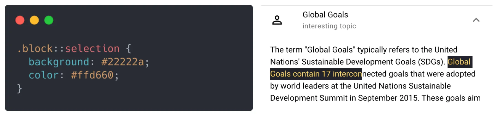
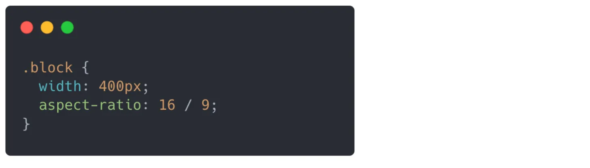
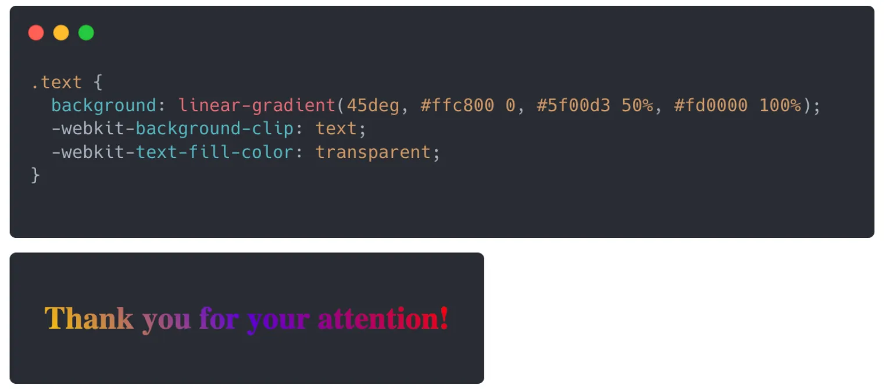

| Css properties | Type | Description | Example |
|---|---|---|---|
| line-clamp | Property | Limit the number of lines in the paragraph and adds an ellipsis(…) at the end |  |
| ::selection | Pseudo-class | Make a custom text selection |  |
| aspect ratio | Property | Avoid using the height of the block |  |
| width: clamp() | Property | Shorthand for min-width, max-width and width in one line | |
| filter: grayscale | Property | Convert a color photo into a black-and-white image in one line of code | |
| linear-gradient | Color | Make colorful text |  |
Source des images: Leonid Shvab - Frontend Weekly